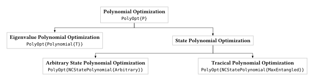

Polynomials in Non-Commutative Optimization
NCTSSoS.jl is designed to solve optimization problems where the variables do not commute, a scenario that is the foundation of quantum mechanics. This page outlines the key polynomial types used in the package and their specific applications in many-body physics.

Non-Commutative Polynomials: The Language of Quantum Systems
In quantum mechanics, the order of measurements matters. Non-commutative polynomials provide the natural language for this reality. They are the building blocks for constructing the Hamiltonian of a quantum system, which describes its total energy.
Trace Polynomials: Probing Non-Local Correlations
Trace polynomials are a specialized class of mathematical objects that consist of polynomials in noncommuting variables combined with traces of their products. Unlike ordinary commutative polynomials where variables can be freely rearranged (e.g., xy = yx), trace polynomials involve noncommutative variables where order matters, and they incorporate the trace operation—a fundamental concept from linear algebra and operator theory that computes the sum of diagonal elements of a matrix. These mathematical structures have gained significant attention due to their applications in quantum information theory, particularly in the context of optimizing quantum systems and analyzing violations of polynomial Bell inequalities. The optimization of trace polynomials subject to tracial constraints represents a natural extension of semidefinite programming techniques to the noncommutative setting, drawing from areas such as real algebraic geometry, operator theory, and noncommutative algebra to provide powerful tools for solving complex problems in quantum mechanics and related fields.
Mathematical Framework
In the context of tracial polynomial optimization, we consider polynomials of the form:
p(X₁, X₂, ..., Xₙ) = Σ cₐ tr(Xₐ)where:
X₁, X₂, ..., Xₙare noncommuting matrix variablescₐare real coefficientsXₐrepresents monomials in the noncommuting variablestr(·)denotes the trace operation
The key challenge in tracial polynomial optimization is to find the minimum or maximum value of such polynomials subject to tracial constraints, which may include:
- Trace normalization conditions
- Positivity constraints on trace polynomials
- Additional structural constraints on the matrix variables
State Polynomials
State polynomials are functions of the expectation values themselves. This structure is essential for defining nonlinear Bell inequalities. These more complex inequalities provide powerful and subtle tests of quantum mechanics, allowing researchers to explore the boundary between the quantum and classical worlds in greater detail.
Eigenvalue Polynomials
These polynomials are used to find the possible energy levels (eigenvalues) of a quantum Hamiltonian. A primary application is to find the ground state energy—the lowest possible energy of a many-body system. This is a fundamental problem in condensed matter physics.